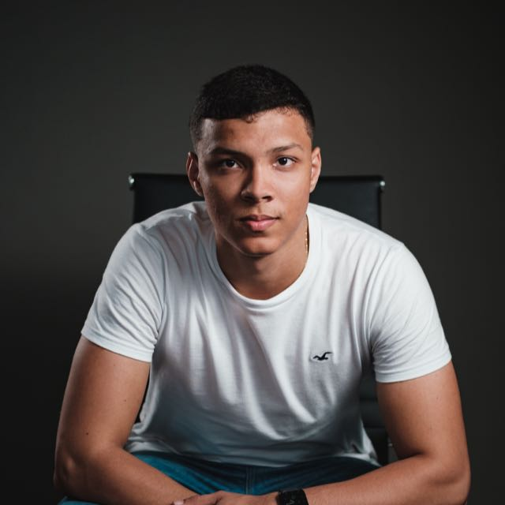

Ewaldo Uhlmann Junior
Matrícula 22200358
Estudante de Ciências da Computação na UFSC.
Um projeto acadêmico que, ao longo do semestre, vai se tornar um site de venda de camisas de futebol. Nesta primeira entrega, apresentamos o planejamento do projeto e o grupo por trás dele.
Conhecer o projetoO Camisa10 é o projeto web escolhido pelo grupo para a disciplina de Programação para Web. A ideia é construir, ao longo das atividades avaliativas, um site de e-commerce fictício de camisas de futebol.
Nesta entrega (AA2), o foco é exclusivamente a estrutura estática da página em HTML e CSS — por isso ainda não há catálogo de produtos, carrinho de compras ou qualquer interatividade. Essas funcionalidades serão incorporadas gradualmente nas próximas atividades da disciplina, à medida que o conteúdo avançar para JavaScript e, futuramente, um back-end.
Desta entrega: aplicar elementos semânticos de HTML5, organizar o conteúdo em cabeçalho, barra lateral, conteúdo principal e rodapé, vincular uma folha de estilos externa e construir um layout responsivo com CSS puro (Flexbox e Grid), sem frameworks.
Do projeto como um todo: evoluir esta base estática para um site funcional de venda de camisas de futebol, com catálogo de produtos, páginas de detalhe e, eventualmente, integração com um back-end.
Quem está por trás do projeto Camisa10:
Matrícula 22200358
Estudante de Ciências da Computação na UFSC.

Matrícula 21203999
Estudante de Ciências da Computação na UFSC.